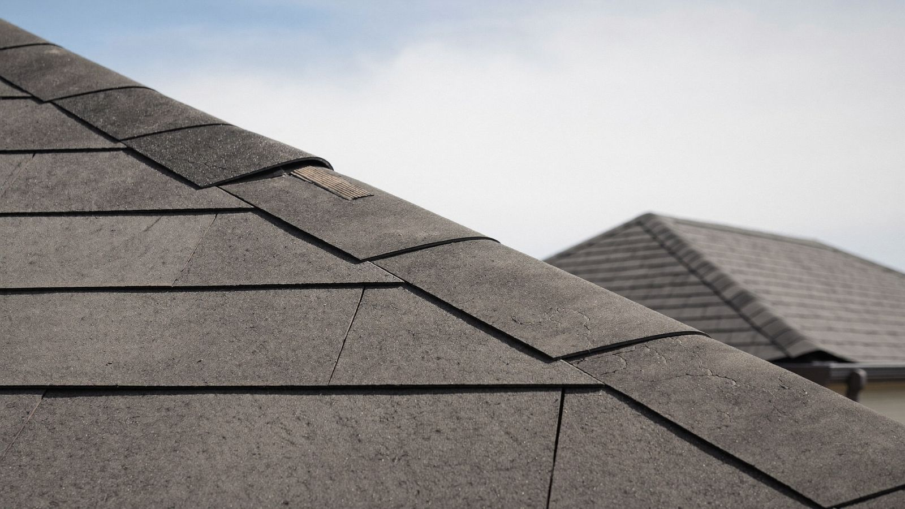

Roof too old for insurance? Here's what happens at 10, 15, and 20 years — and your options.
Your roof doesn't have to leak to become an insurance problem. In Texas, the trouble starts quietly around year 10 and gets loud by year 20. Here's the timeline — and how to stay ahead of it.

Most homeowners think of their roof's lifespan in terms of leaks: no leaks, no problem. Insurance companies think of it in terms of actuarial tables — and on the Texas Gulf Coast, those tables have gotten brutal. A shingle roof that's perfectly watertight can still cost you your coverage, or quietly gut what a future claim pays. Here's how the timeline typically plays out with Texas carriers, and the move that makes sense at each stage.
The quiet years
Full replacement-cost (RCV) coverage, competitive premiums, insurers happy to have you. The one move worth making here: if you replace your roof for any reason, choose Class 4 impact-resistant shingles — Texas insurers are required to offer premium discounts for them, and the discount repeats every year.
The quiet downgrade
This is where many carriers slip an ACV endorsement into your renewal: your roof is now covered for its depreciated value, not the cost of a new one. A hail claim on a 14-year-old roof might pay a few thousand dollars against a $12,000–$18,000 replacement — before your wind/hail deductible, which in coastal counties often runs 1–2% of your home's insured value. Most homeowners discover this after the storm. Check your declarations page now; look for "ACV," "roof surface payment schedule," or "loss settlement — roof."
The letters start
Renewal inspections, aerial imagery reviews, and eventually the letter: replace, prove condition, or lose the policy — with a minimum of 60 days' notice in Texas. At this stage you're managing a deadline; we wrote a step-by-step game plan for exactly that situation.
Warning signs your insurer is about to act
- A renewal packet mentioning a "roof condition review" or requesting the roof's installation date
- A drone or aerial inspection you didn't schedule (carriers routinely review satellite imagery at renewal)
- Your premium jumping noticeably with no claims filed — often the step before a coverage change
- An ACV or "payment schedule" endorsement appearing in your renewal documents
- Neighbors with same-age roofs getting non-renewal letters — subdivisions built together age together, and carriers know it
Your options, honestly ranked
If the roof has real life left: get a professional inspection and keep the report. It's your evidence for the underwriter, and it tells you the true remaining life instead of the actuarial guess. Our guide to whether a roof needs replacing or just repair covers what we actually look for up there.
If it's borderline: targeted repairs plus documentation can buy years — both structurally and with the underwriter. Worn pipe boots, lifted flashing, and a handful of damaged shingles are cheap to fix and are exactly what inspections flag.
If it's genuinely near the end: replace on your schedule, not theirs. Same cost either way, but doing it before the ultimatum means you pick the timing and materials, restore RCV coverage, capture the Class 4 discount, and walk into hurricane season with a new roof instead of an 19-year-old one. The 2026 Houston cost guide has real numbers, and every estimate we write is fixed-price with a 25-year workmanship warranty.
An old roof is a negotiation with your insurer. A new roof is leverage.
Not sure how much life your roof has left?
Free inspection, straight answer, and a written report you can show your insurance company — whichever way the verdict goes.